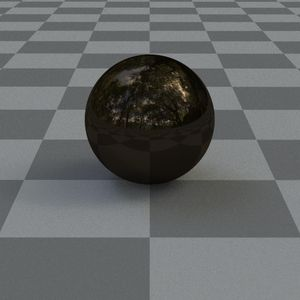

🎯
Sampling the hemisphere
17-minute read
Introduction
Generating samples within a hemisphere around a point is needed when doing Monte-Carlo path tracing. These samples can be chosen in a smart way, to be proportional to the BRDF. The following sections explain how to generate these samples, and how to properly weight them using the pdf, for several BRDF models.
The result of importance sampling can be a significant reduction in noise. In the following image, the sphere on the left uses cosine-weighted sampling while the sphere on the right uses BRDF importance-sampling.
Cosine-weighted sampling.  BRDF importance-sampling
Spherical and cartesian coordinates
When generating samples in the hemisphere, this is usually done using spherical coordinates by calculating a θ \theta θ ϕ \phi ϕ
{ x = cos ( ϕ ) ⋅ sin ( θ ) y = sin ( ϕ ) ⋅ sin ( θ ) z = cos ( θ ) \left\{\begin{matrix}
\begin{aligned}
x&=\cos(\phi) \cdot \sin(\theta)\\
y&=\sin(\phi) \cdot \sin(\theta)\\
z&=\cos(\theta)
\end{aligned}
\end{matrix}\right. ⎩ ⎨ ⎧ x y z = cos ( ϕ ) ⋅ sin ( θ ) = sin ( ϕ ) ⋅ sin ( θ ) = cos ( θ )
In these snippets you'll see that the sine/cosine is often calculated directly instead of calculating the angle θ \theta θ
Technique
The following steps are performed.
Calculate the normalized PDF
Split up the PDF (one for θ \theta θ ϕ \phi ϕ
Calculate the CDF by integrating the PDF
Set the CDF equal to some random number between 0 and 1 to obtain a θ \theta θ ϕ \phi ϕ
A common action that is performed throughout the following equations is going from an integral over the hemisphere using solid angles, to an integral over the hemisphere using spherical coordinates. This transformation is done as follows.
∫ Ω f ( θ ) d w = ∫ 0 2 π ∫ 0 π 2 f ( θ , ϕ ) sin θ d θ d ϕ \int _{\Omega }f(\theta)dw = \int_{0}^{2\pi }\int_{0}^{\frac{\pi}{2}}f(\theta, \phi) \sin\theta d \theta d \phi
∫ Ω f ( θ ) d w = ∫ 0 2 π ∫ 0 2 π f ( θ , ϕ ) sin θ d θ d ϕ
Uniform hemisphere
{ θ = cos − 1 ( ε 0 ) ϕ = 2 π ε 1 \left\{\begin{matrix}
\begin{aligned}
\theta &= \cos^{-1}(\varepsilon_{0}) \\
\phi &= 2\pi \varepsilon_{1}
\end{aligned}\end{matrix}\right. { θ ϕ = cos − 1 ( ε 0 ) = 2 π ε 1
p d f ( w i ) = 1 2 π pdf(w_{i}) = \frac{1}{2\pi}
p df ( w i ) = 2 π 1
Derivation
For uniform sampling, the PDF should be proportional to 1. We PDF is normalized by dividing by the PDF, integrated over the whole hemisphere.
p d f ( ω ) = 1 ∫ Ω 1 d ω = 1 ∫ 0 2 π ∫ 0 π 2 1 sin θ d θ d ϕ = 1 2 π p d f ( θ , ϕ ) = p d f ( ω ) sin θ = sin θ 2 π \begin{aligned} pdf(\omega) &= \frac{1}{\int _{\Omega }1d\omega} = \frac{1}{\int_{0}^{2\pi }\int_{0}^{\frac{\pi}{2}}1\sin\theta d \theta d \phi} = \frac{1}{2\pi} \\ pdf(\theta,\phi) &= pdf(\omega ) \sin\theta = \frac{\sin\theta}{2\pi} \end{aligned}
p df ( ω ) p df ( θ , ϕ ) = ∫ Ω 1 d ω 1 = ∫ 0 2 π ∫ 0 2 π 1 sin θ d θ d ϕ 1 = 2 π 1 = p df ( ω ) sin θ = 2 π sin θ
Next, the PDF is split up. We obtain the pdf for θ \theta θ ϕ \phi ϕ 2 π 2\pi 2 π ϕ \phi ϕ
p d f ( θ ) = ∫ 0 2 π p d f ( θ , ϕ ) d ϕ = sin θ p d f ( ϕ ∣ θ ) = p d f ( θ , ϕ ) p d f ( θ ) = sin θ 2 π sin θ = 1 2 π \begin{aligned} pdf(\theta) &= \int_{0}^{2\pi}pdf(\theta, \phi) d\phi = \sin\theta \\ pdf(\phi|\theta) &= \frac{pdf(\theta, \phi)}{pdf(\theta)} = \frac{\frac{\sin\theta}{2\pi}}{\sin\theta} = \frac{1}{2\pi} \end{aligned}
p df ( θ ) p df ( ϕ ∣ θ ) = ∫ 0 2 π p df ( θ , ϕ ) d ϕ = sin θ = p df ( θ ) p df ( θ , ϕ ) = sin θ 2 π s i n θ = 2 π 1
We can then integrate the PDF to get the CDF.
c d f ( θ ) = ∫ 0 θ p d f ( θ ) d θ = ∫ 0 θ sin θ d θ = 1 − cos θ c d f ( ϕ ∣ θ ) = ∫ 0 ϕ p d f ( ϕ ∣ θ ) d θ = ∫ 0 ϕ 1 2 π d ϕ = 1 ϕ 2 π \begin{aligned} cdf(\theta) &= \int_{0}^{\theta}pdf(\theta)d\theta = \int_{0}^{\theta}\sin\theta d\theta = 1-\cos\theta \\ cdf(\phi|\theta) &= \int_{0}^{\phi}pdf(\phi|\theta) d\theta = \int_{0}^{\phi}\frac{1}{2\pi} d\phi = \frac{1\phi}{2\pi} \end{aligned}
c df ( θ ) c df ( ϕ ∣ θ ) = ∫ 0 θ p df ( θ ) d θ = ∫ 0 θ sin θ d θ = 1 − cos θ = ∫ 0 ϕ p df ( ϕ ∣ θ ) d θ = ∫ 0 ϕ 2 π 1 d ϕ = 2 π 1 ϕ
By setting these CDFs equal to a random number ε , ϵ [ 0 , 1 ] \varepsilon, \epsilon \left [ 0, 1 \right ] ε , ϵ [ 0 , 1 ] θ \theta θ ϕ \phi ϕ
c d f ( θ ) = 1 − cos θ = ε 0 → θ = cos − 1 ( 1 − ε 0 ) c d f ( ϕ ∣ θ ) = 1 ϕ 2 π = ε 1 → ϕ = 2 π ε 1 \begin{alignat*}{2} cdf(\theta) &= 1-\cos\theta {}& =\varepsilon_{0} \rightarrow \theta &= \cos^{-1}(1-\varepsilon_{0}) \\ cdf(\phi|\theta) &= \frac{1\phi}{2\pi} {}& =\varepsilon_{1} \rightarrow \phi &= 2\pi \varepsilon_{1} \end{alignat*}
c df ( θ ) c df ( ϕ ∣ θ ) = 1 − cos θ = 2 π 1 ϕ = ε 0 → θ = ε 1 → ϕ = cos − 1 ( 1 − ε 0 ) = 2 π ε 1
Since ε \varepsilon ε
{ θ = cos − 1 ( ε 0 ) ϕ = 2 π ε 1 \left\{\begin{matrix} \begin{aligned} \theta &= \cos^{-1}(\varepsilon_{0}) \\ \phi &= 2\pi \varepsilon_{1} \end{aligned} \end{matrix}\right.
{ θ ϕ = cos − 1 ( ε 0 ) = 2 π ε 1
Cosine-weighted hemisphere
{ θ = cos − 1 ( ε 0 ) ϕ = 2 π ε 1 \left\{\begin{matrix} \begin{aligned} \theta &= \cos^{-1}(\sqrt{\varepsilon_{0}}) \\ \phi &= 2\pi \varepsilon_{1} \end{aligned} \end{matrix}\right.
{ θ ϕ = cos − 1 ( ε 0 ) = 2 π ε 1
p d f ( w i ) = cos θ π pdf(w_{i}) = \frac{\cos\theta}{\pi}
p df ( w i ) = π cos θ
Derivation
For cosine-weighted sampling, the PDF should be proportional to a cosine. The PDF is normalized by dividing by the result of integrating the PDF over the whole hemisphere.
p d f ( ω ) = cos θ ∫ Ω cos θ d ω = cos θ ∫ 0 2 π ∫ 0 π 2 sin θ cos θ d θ d ϕ = cos θ π p d f ( θ , ϕ ) = p d f ( ω ) sin θ = sin θ cos θ π \begin{aligned} pdf(\omega) &= \frac{\cos\theta}{\int _{\Omega }\cos\theta d\omega} = \frac{\cos\theta}{\int_{0}^{2\pi }\int_{0}^{\frac{\pi}{2}}\sin\theta\cos\theta d \theta d \phi} = \frac{\cos\theta}{\pi} \\ pdf(\theta,\phi) &= pdf(\omega ) \sin\theta = \frac{\sin\theta\cos\theta}{\pi} \end{aligned}
p df ( ω ) p df ( θ , ϕ ) = ∫ Ω cos θ d ω cos θ = ∫ 0 2 π ∫ 0 2 π sin θ cos θ d θ d ϕ cos θ = π cos θ = p df ( ω ) sin θ = π sin θ cos θ
Next, the PDF is split up. We obtain the pdf for θ \theta θ ϕ \phi ϕ 2 π 2\pi 2 π ϕ \phi ϕ
p d f ( θ ) = ∫ 0 2 π p d f ( θ , ϕ ) d ϕ = 2 sin θ cos θ p d f ( ϕ ∣ θ ) = p d f ( θ , ϕ ) p d f ( θ ) = sin θ cos θ π 2 sin θ cos θ = 1 2 π \begin{aligned} pdf(\theta) &= \int_{0}^{2\pi}pdf(\theta, \phi) d\phi = 2\sin\theta\cos\theta \\ pdf(\phi|\theta) &= \frac{pdf(\theta, \phi)}{pdf(\theta)} = \frac{\frac{\sin\theta\cos\theta}{\pi}}{2\sin\theta\cos\theta} = \frac{1}{2\pi} \end{aligned}
p df ( θ ) p df ( ϕ ∣ θ ) = ∫ 0 2 π p df ( θ , ϕ ) d ϕ = 2 sin θ cos θ = p df ( θ ) p df ( θ , ϕ ) = 2 sin θ cos θ π s i n θ c o s θ = 2 π 1
We can then integrate the PDF to get the CDF.
c d f ( θ ) = ∫ 0 θ p d f ( θ ) d θ = ∫ 0 θ 2 sin θ cos θ d θ = sin 2 θ c d f ( ϕ ∣ θ ) = ∫ 0 ϕ p d f ( ϕ ∣ θ ) d θ = ∫ 0 ϕ 1 2 π d ϕ = 1 ϕ 2 π \begin{aligned} cdf(\theta) &= \int_{0}^{\theta}pdf(\theta)d\theta = \int_{0}^{\theta}2\sin\theta\cos\theta d\theta = \sin^2\theta \\ cdf(\phi|\theta) &= \int_{0}^{\phi}pdf(\phi|\theta) d\theta = \int_{0}^{\phi}\frac{1}{2\pi} d\phi = \frac{1\phi}{2\pi} \end{aligned}
c df ( θ ) c df ( ϕ ∣ θ ) = ∫ 0 θ p df ( θ ) d θ = ∫ 0 θ 2 sin θ cos θ d θ = sin 2 θ = ∫ 0 ϕ p df ( ϕ ∣ θ ) d θ = ∫ 0 ϕ 2 π 1 d ϕ = 2 π 1 ϕ
By setting these CDFs equal to a random number ε , ϵ [ 0 , 1 ] \varepsilon, \epsilon \left [ 0, 1 \right ] ε , ϵ [ 0 , 1 ] θ \theta θ ϕ \phi ϕ
c d f ( θ ) = sin 2 θ = ε 0 → θ = sin − 1 ( ε 0 ) = cos − 1 ( 1 − ε 0 ) c d f ( ϕ ∣ θ ) = 1 ϕ 2 π = ε 1 → ϕ = 2 π ε 1 \begin{alignat*}{2} cdf(\theta) &= \sin^2\theta {}& =\varepsilon_{0} \rightarrow \theta &= \sin^{-1}(\sqrt{\varepsilon_{0}}) = \cos^{-1}(\sqrt{1-\varepsilon_{0}}) \\ cdf(\phi|\theta) &= \frac{1\phi}{2\pi} {}& =\varepsilon_{1} \rightarrow \phi &= 2\pi \varepsilon_{1} \end{alignat*}
c df ( θ ) c df ( ϕ ∣ θ ) = sin 2 θ = 2 π 1 ϕ = ε 0 → θ = ε 1 → ϕ = sin − 1 ( ε 0 ) = cos − 1 ( 1 − ε 0 ) = 2 π ε 1
Since ε \varepsilon ε
{ θ = cos − 1 ( ε 0 ) ϕ = 2 π ε 1 \left\{\begin{matrix} \begin{aligned} \theta &= \cos^{-1}(\sqrt{\varepsilon_{0}}) \\ \phi &= 2\pi \varepsilon_{1} \end{aligned} \end{matrix}\right.
{ θ ϕ = cos − 1 ( ε 0 ) = 2 π ε 1
Power cosine-weighted hemisphere
This is a generalization of the cosine-weighted sampling scheme in the previous section. Instead of sampling proportional to cos θ \cos\theta cos θ cos α θ \cos^{\alpha}\theta cos α θ
{ θ = cos − 1 ( ε 0 1 α + 1 ) ϕ = 2 π ε 1 \left\{\begin{matrix} \begin{aligned} \theta &= \cos^{-1}(\varepsilon_{0}^{\frac{1}{\alpha+1}}) \\ \phi &= 2\pi \varepsilon_{1} \end{aligned} \end{matrix}\right.
⎩ ⎨ ⎧ θ ϕ = cos − 1 ( ε 0 α + 1 1 ) = 2 π ε 1
p d f ( w i ) = ( α + 1 ) cos α θ 2 π pdf(w_{i}) = \frac{(\alpha+1)\cos^{\alpha}\theta}{2\pi}
p df ( w i ) = 2 π ( α + 1 ) cos α θ
Derivation
For power cosine-weighted sampling, the PDF should be proportional to a cosine with a power exponent. The PDF is normalized by dividing by the result of integrating the PDF over the whole hemisphere
p d f ( ω ) = cos α θ ∫ Ω cos α θ d ω = cos α θ ∫ 0 2 π ∫ 0 π 2 sin θ cos α θ d θ d ϕ = ( α + 1 ) cos α θ 2 π p d f ( θ , ϕ ) = p d f ( ω ) sin θ = ( α + 1 ) cos α θ sin θ 2 π \begin{aligned} pdf(\omega) &= \frac{\cos^{\alpha}\theta}{\int _{\Omega }\cos^{\alpha}\theta d\omega} = \frac{\cos^{\alpha}\theta}{\int_{0}^{2\pi }\int_{0}^{\frac{\pi}{2}}\sin\theta\cos^{\alpha}\theta d \theta d \phi} = \frac{(\alpha+1)\cos^{\alpha}\theta}{2\pi} \\ pdf(\theta,\phi) &= pdf(\omega ) \sin\theta = \frac{(\alpha+1)\cos^{\alpha}\theta\sin\theta}{2\pi} \end{aligned}
p df ( ω ) p df ( θ , ϕ ) = ∫ Ω cos α θ d ω cos α θ = ∫ 0 2 π ∫ 0 2 π sin θ cos α θ d θ d ϕ cos α θ = 2 π ( α + 1 ) cos α θ = p df ( ω ) sin θ = 2 π ( α + 1 ) cos α θ sin θ
Next, the PDF is split up. We obtain the pdf for θ \theta θ ϕ \phi ϕ 2 π 2\pi 2 π ϕ \phi ϕ
p d f ( θ ) = ∫ 0 2 π p d f ( θ , ϕ ) d ϕ = ( α + 1 ) cos α θ sin θ p d f ( ϕ ∣ θ ) = p d f ( θ , ϕ ) p d f ( θ ) = ( α + 1 ) cos α θ sin θ 2 π ( α + 1 ) cos α θ sin θ = 1 2 π \begin{aligned} pdf(\theta) &= \int_{0}^{2\pi}pdf(\theta, \phi) d\phi = (\alpha+1)\cos^{\alpha}\theta\sin\theta \\ pdf(\phi|\theta) &= \frac{pdf(\theta, \phi)}{pdf(\theta)} = \frac{\frac{(\alpha+1)\cos^{\alpha}\theta\sin\theta}{2\pi}}{(\alpha+1)\cos^{\alpha}\theta\sin\theta} = \frac{1}{2\pi} \end{aligned}
p df ( θ ) p df ( ϕ ∣ θ ) = ∫ 0 2 π p df ( θ , ϕ ) d ϕ = ( α + 1 ) cos α θ sin θ = p df ( θ ) p df ( θ , ϕ ) = ( α + 1 ) cos α θ sin θ 2 π ( α + 1 ) c o s α θ s i n θ = 2 π 1
We can then integrate the PDF to get the CDF.
c d f ( θ ) = ∫ 0 θ p d f ( θ ) d θ = ∫ 0 θ ( α + 1 ) cos α θ sin θ d θ = 1 − cos ( α + 1 ) θ c d f ( ϕ ∣ θ ) = ∫ 0 ϕ p d f ( ϕ ∣ θ ) d θ = ∫ 0 ϕ 1 2 π d ϕ = 1 ϕ 2 π \begin{aligned} cdf(\theta) &= \int_{0}^{\theta}pdf(\theta)d\theta = \int_{0}^{\theta}(\alpha+1)\cos^{\alpha}\theta\sin\theta d\theta = 1-\cos^{(\alpha+1)}\theta \\ cdf(\phi|\theta) &= \int_{0}^{\phi}pdf(\phi|\theta) d\theta = \int_{0}^{\phi}\frac{1}{2\pi} d\phi = \frac{1\phi}{2\pi} \end{aligned}
c df ( θ ) c df ( ϕ ∣ θ ) = ∫ 0 θ p df ( θ ) d θ = ∫ 0 θ ( α + 1 ) cos α θ sin θ d θ = 1 − cos ( α + 1 ) θ = ∫ 0 ϕ p df ( ϕ ∣ θ ) d θ = ∫ 0 ϕ 2 π 1 d ϕ = 2 π 1 ϕ
By setting these CDFs equal to a random number ε , ϵ [ 0 , 1 ] \varepsilon, \epsilon \left [ 0, 1 \right ] ε , ϵ [ 0 , 1 ] θ \theta θ ϕ \phi ϕ
c d f ( θ ) = 1 − cos ( α + 1 ) θ = ε 0 → θ = cos − 1 ( ( 1 − ε 0 ) 1 α + 1 ) c d f ( ϕ ∣ θ ) = 1 ϕ 2 π = ε 1 → ϕ = 2 π ε 1 \begin{alignat*}{2} cdf(\theta) &= 1-\cos^{(\alpha+1)}\theta {}& =\varepsilon_{0} \rightarrow \theta &= \cos^{-1}((1-\varepsilon_{0})^{\frac{1}{\alpha+1}}) \\ cdf(\phi|\theta) &= \frac{1\phi}{2\pi} {}& =\varepsilon_{1} \rightarrow \phi &= 2\pi \varepsilon_{1} \end{alignat*}
c df ( θ ) c df ( ϕ ∣ θ ) = 1 − cos ( α + 1 ) θ = 2 π 1 ϕ = ε 0 → θ = ε 1 → ϕ = cos − 1 (( 1 − ε 0 ) α + 1 1 ) = 2 π ε 1
Since ε \varepsilon ε
{ θ = cos − 1 ( ε 0 1 α + 1 ) ϕ = 2 π ε 1 \left\{\begin{matrix} \begin{aligned} \theta &= \cos^{-1}(\varepsilon_{0}^{\frac{1}{\alpha+1}}) \\ \phi &= 2\pi \varepsilon_{1} \end{aligned} \end{matrix}\right.
⎩ ⎨ ⎧ θ ϕ = cos − 1 ( ε 0 α + 1 1 ) = 2 π ε 1
Microfacet-BRDF hemisphere
For microfacet BRDFs, the sampling can be made proportional to the used normal distribution function D ( h ) D(h) D ( h ) θ \theta θ H H H
∫ Ω D ( h ) cos θ d h = 1 \int _{\Omega }D(h)\cos\theta dh = 1
∫ Ω D ( h ) cos θ d h = 1
Blinn-Phong
D ( h ) = ( α + 2 ) cos θ α 2 π D(h) = \frac{(\alpha+2)\cos\theta^{\alpha}}{2\pi}
D ( h ) = 2 π ( α + 2 ) cos θ α
{ θ = cos − 1 ( ε 0 1 α + 2 ) ϕ = 2 π ε 1 \left\{\begin{matrix} \begin{aligned} \theta &= \cos^{-1}(\varepsilon_{0}^{\frac{1}{\alpha+2}}) \\ \phi &= 2\pi \varepsilon_{1} \end{aligned} \end{matrix}\right.
⎩ ⎨ ⎧ θ ϕ = cos − 1 ( ε 0 α + 2 1 ) = 2 π ε 1
p d f ( w i ) = ( α + 2 ) cos θ ( α + 1 ) 2 π pdf(w_{i}) = \frac{(\alpha+2)\cos\theta^{(\alpha+1)}}{2\pi}
p df ( w i ) = 2 π ( α + 2 ) cos θ ( α + 1 )
Derivation
p d f ( ω ) = D ( h ) cos θ = ( α + 2 ) cos θ α cos θ 2 π = ( α + 2 ) cos θ ( α + 1 ) 2 π p d f ( θ , ϕ ) = p d f ( ω ) sin θ = ( α + 2 ) cos θ ( α + 1 ) sin θ 2 π \begin{aligned} pdf(\omega) &= D(h)\cos\theta = \frac{(\alpha+2)\cos\theta^{\alpha}\cos\theta}{2\pi} = \frac{(\alpha+2)\cos\theta^{(\alpha+1)}}{2\pi} \\ pdf(\theta,\phi) &= pdf(\omega ) \sin\theta = \frac{(\alpha+2)\cos\theta^{(\alpha+1)}\sin\theta}{2\pi} \end{aligned}
p df ( ω ) p df ( θ , ϕ ) = D ( h ) cos θ = 2 π ( α + 2 ) cos θ α cos θ = 2 π ( α + 2 ) cos θ ( α + 1 ) = p df ( ω ) sin θ = 2 π ( α + 2 ) cos θ ( α + 1 ) sin θ
Next, the PDF is split up. We obtain the pdf for θ \theta θ ϕ \phi ϕ 2 π 2\pi 2 π ϕ \phi ϕ
p d f ( θ ) = ∫ 0 2 π p d f ( θ , ϕ ) d ϕ = ( α + 2 ) cos θ ( α + 1 ) sin θ p d f ( ϕ ∣ θ ) = p d f ( θ , ϕ ) p d f ( θ ) = ( α + 2 ) cos θ ( α + 1 ) sin θ 2 π ( α + 2 ) cos θ ( α + 1 ) sin θ = 1 2 π \begin{aligned} pdf(\theta) &= \int_{0}^{2\pi}pdf(\theta, \phi) d\phi = (\alpha+2)\cos\theta^{(\alpha+1)}\sin\theta \\ pdf(\phi|\theta) &= \frac{pdf(\theta, \phi)}{pdf(\theta)} = \frac{\frac{(\alpha+2)\cos\theta^{(\alpha+1)}\sin\theta}{2\pi}}{(\alpha+2)\cos\theta^{(\alpha+1)}\sin\theta} = \frac{1}{2\pi} \end{aligned}
p df ( θ ) p df ( ϕ ∣ θ ) = ∫ 0 2 π p df ( θ , ϕ ) d ϕ = ( α + 2 ) cos θ ( α + 1 ) sin θ = p df ( θ ) p df ( θ , ϕ ) = ( α + 2 ) cos θ ( α + 1 ) sin θ 2 π ( α + 2 ) c o s θ ( α + 1 ) s i n θ = 2 π 1
We can then integrate the PDF to get the CDF.
c d f ( θ ) = ∫ 0 θ p d f ( θ ) d θ = ∫ 0 θ ( α + 2 ) cos θ ( α + 1 ) sin θ d θ = 1 − cos θ ( α + 2 ) c d f ( ϕ ∣ θ ) = ∫ 0 ϕ p d f ( ϕ ∣ θ ) d θ = ∫ 0 ϕ 1 2 π d ϕ = 1 ϕ 2 π \begin{aligned} cdf(\theta) &= \int_{0}^{\theta}pdf(\theta)d\theta = \int_{0}^{\theta}(\alpha+2)\cos\theta^{(\alpha+1)}\sin\theta d\theta = 1-\cos\theta^{(\alpha+2)} \\ cdf(\phi|\theta) &= \int_{0}^{\phi}pdf(\phi|\theta) d\theta = \int_{0}^{\phi}\frac{1}{2\pi} d\phi = \frac{1\phi}{2\pi} \end{aligned}
c df ( θ ) c df ( ϕ ∣ θ ) = ∫ 0 θ p df ( θ ) d θ = ∫ 0 θ ( α + 2 ) cos θ ( α + 1 ) sin θ d θ = 1 − cos θ ( α + 2 ) = ∫ 0 ϕ p df ( ϕ ∣ θ ) d θ = ∫ 0 ϕ 2 π 1 d ϕ = 2 π 1 ϕ
By setting these CDFs equal to a random number ε , ϵ [ 0 , 1 ] \varepsilon, \epsilon \left [ 0, 1 \right ] ε , ϵ [ 0 , 1 ] θ \theta θ ϕ \phi ϕ
c d f ( θ ) = 1 − cos θ ( α + 2 ) θ = ε 0 → θ = cos − 1 ( ( 1 − ε 0 ) 1 α + 2 ) c d f ( ϕ ∣ θ ) = 1 ϕ 2 π = ε 1 → ϕ = 2 π ε 1 \begin{alignat*}{2} cdf(\theta) &= 1-\cos\theta^{(\alpha+2)}\theta {}& =\varepsilon_{0} \rightarrow \theta &= \cos^{-1}((1-\varepsilon_{0})^{\frac{1}{\alpha+2}}) \\ cdf(\phi|\theta) &= \frac{1\phi}{2\pi} {}& =\varepsilon_{1} \rightarrow \phi &= 2\pi \varepsilon_{1} \end{alignat*}
c df ( θ ) c df ( ϕ ∣ θ ) = 1 − cos θ ( α + 2 ) θ = 2 π 1 ϕ = ε 0 → θ = ε 1 → ϕ = cos − 1 (( 1 − ε 0 ) α + 2 1 ) = 2 π ε 1
Since ε \varepsilon ε
{ θ = cos − 1 ( ε 0 1 α + 2 ) ϕ = 2 π ε 1 \left\{\begin{matrix} \begin{aligned} \theta &= \cos^{-1}(\varepsilon_{0}^{\frac{1}{\alpha+2}}) \\ \phi &= 2\pi \varepsilon_{1} \end{aligned} \end{matrix}\right.
⎩ ⎨ ⎧ θ ϕ = cos − 1 ( ε 0 α + 2 1 ) = 2 π ε 1
Beckmann
D ( h ) = e − tan θ 2 α 2 α 2 cos 4 θ D(h) = \frac{e^{\frac{-\tan\theta^{2}}{\alpha^{2}}}}{\alpha^{2}\cos^4\theta}
D ( h ) = α 2 cos 4 θ e α 2 − t a n θ 2
{ θ = tan − 1 − α 2 ln ( 1 − ε 0 π ) ϕ = 2 π ε 1 \left\{\begin{matrix} \begin{aligned} \theta &= \tan^{-1}\sqrt{-\alpha^2\ln(1-\frac{\varepsilon_{0}}{\pi})} \\ \phi &= 2\pi \varepsilon_{1} \end{aligned} \end{matrix}\right.
⎩ ⎨ ⎧ θ ϕ = tan − 1 − α 2 ln ( 1 − π ε 0 ) = 2 π ε 1
p d f ( w i ) = e − tan θ 2 α 2 α 2 cos 3 θ pdf(w_{i}) = \frac{e^{\frac{-\tan\theta^{2}}{\alpha^{2}}}}{\alpha^{2}\cos^3\theta}
p df ( w i ) = α 2 cos 3 θ e α 2 − t a n θ 2
Derivation
p d f ( ω ) = D ( h ) cos θ = e − tan θ 2 α 2 cos θ α 2 cos 4 θ = e − tan θ 2 α 2 α 2 cos 3 θ p d f ( θ , ϕ ) = p d f ( ω ) sin θ = e − tan θ 2 α 2 sin θ α 2 cos 3 θ \begin{aligned} pdf(\omega) &= D(h)\cos\theta = \frac{e^{\frac{-\tan\theta^{2}}{\alpha^{2}}}\cos\theta}{\alpha^{2}\cos^4\theta} = \frac{e^{\frac{-\tan\theta^{2}}{\alpha^{2}}}}{\alpha^{2}\cos^3\theta} \\ pdf(\theta,\phi) &= pdf(\omega ) \sin\theta = \frac{e^{\frac{-\tan\theta^{2}}{\alpha^{2}}}\sin\theta}{\alpha^{2}\cos^3\theta} \end{aligned}
p df ( ω ) p df ( θ , ϕ ) = D ( h ) cos θ = α 2 cos 4 θ e α 2 − t a n θ 2 cos θ = α 2 cos 3 θ e α 2 − t a n θ 2 = p df ( ω ) sin θ = α 2 cos 3 θ e α 2 − t a n θ 2 sin θ
Next, the PDF is split up. We obtain the pdf for θ \theta θ ϕ \phi ϕ 2 π 2\pi 2 π ϕ \phi ϕ
p d f ( θ ) = ∫ 0 2 π p d f ( θ , ϕ ) d ϕ = 2 π e − tan θ 2 α 2 sin θ α 2 cos 3 θ p d f ( ϕ ∣ θ ) = p d f ( θ , ϕ ) p d f ( θ ) = e − tan θ 2 α 2 sin θ α 2 cos 3 θ 2 π e − tan θ 2 α 2 sin θ α 2 cos 3 θ = 1 2 π \begin{aligned} pdf(\theta) &= \int_{0}^{2\pi}pdf(\theta, \phi) d\phi = \frac{2\pi e^{\frac{-\tan\theta^{2}}{\alpha^{2}}}\sin\theta}{\alpha^{2}\cos^3\theta} \\ pdf(\phi|\theta) &= \frac{pdf(\theta, \phi)}{pdf(\theta)} = \frac{\frac{e^{\frac{-\tan\theta^{2}}{\alpha^{2}}}\sin\theta}{\alpha^{2}\cos^3\theta}}{\frac{2\pi e^{\frac{-\tan\theta^{2}}{\alpha^{2}}}\sin\theta}{\alpha^{2}\cos^3\theta}} = \frac{1}{2\pi} \end{aligned}
p df ( θ ) p df ( ϕ ∣ θ ) = ∫ 0 2 π p df ( θ , ϕ ) d ϕ = α 2 cos 3 θ 2 π e α 2 − t a n θ 2 sin θ = p df ( θ ) p df ( θ , ϕ ) = α 2 c o s 3 θ 2 π e α 2 − t a n θ 2 s i n θ α 2 c o s 3 θ e α 2 − t a n θ 2 s i n θ = 2 π 1
We can then integrate the PDF to get the CDF.
c d f ( θ ) = ∫ 0 θ p d f ( θ ) d θ = ∫ 0 θ 2 π e − tan θ 2 α 2 sin θ α 2 cos 3 θ d θ = π ( 1 − e − tan θ 2 α 2 ) c d f ( ϕ ∣ θ ) = ∫ 0 ϕ p d f ( ϕ ∣ θ ) d θ = ∫ 0 ϕ 1 2 π d ϕ = 1 ϕ 2 π \begin{aligned} cdf(\theta) &= \int_{0}^{\theta}pdf(\theta)d\theta = \int_{0}^{\theta}\frac{2\pi e^{\frac{-\tan\theta^{2}}{\alpha^{2}}}\sin\theta}{\alpha^{2}\cos^3\theta} d\theta = \pi(1-e^{\frac{-\tan\theta^{2}}{\alpha^{2}}})\\ cdf(\phi|\theta) &= \int_{0}^{\phi}pdf(\phi|\theta) d\theta = \int_{0}^{\phi}\frac{1}{2\pi} d\phi = \frac{1\phi}{2\pi} \end{aligned}
c df ( θ ) c df ( ϕ ∣ θ ) = ∫ 0 θ p df ( θ ) d θ = ∫ 0 θ α 2 cos 3 θ 2 π e α 2 − t a n θ 2 sin θ d θ = π ( 1 − e α 2 − t a n θ 2 ) = ∫ 0 ϕ p df ( ϕ ∣ θ ) d θ = ∫ 0 ϕ 2 π 1 d ϕ = 2 π 1 ϕ
By setting these CDFs equal to a random number ε , ϵ [ 0 , 1 ] \varepsilon, \epsilon \left [ 0, 1 \right ] ε , ϵ [ 0 , 1 ] θ \theta θ ϕ \phi ϕ
c d f ( θ ) = π ( 1 − e − tan θ 2 α 2 ) = ε 0 → θ = tan − 1 − α 2 ln ( 1 − ε 0 π ) c d f ( ϕ ∣ θ ) = 1 ϕ 2 π = ε 1 → ϕ = 2 π ε 1 \begin{alignat*}{2} cdf(\theta) &= \pi(1-e^{\frac{-\tan\theta^{2}}{\alpha^{2}}}) {}& =\varepsilon_{0} \rightarrow \theta &= \tan^{-1}\sqrt{-\alpha^2\ln(1-\frac{\varepsilon_{0}}{\pi})} \\ cdf(\phi|\theta) &= \frac{1\phi}{2\pi} {}& =\varepsilon_{1} \rightarrow \phi &= 2\pi \varepsilon_{1} \end{alignat*}
c df ( θ ) c df ( ϕ ∣ θ ) = π ( 1 − e α 2 − t a n θ 2 ) = 2 π 1 ϕ = ε 0 → θ = ε 1 → ϕ = tan − 1 − α 2 ln ( 1 − π ε 0 ) = 2 π ε 1
This gives us the following samples.
{ θ = tan − 1 − α 2 ln ( 1 − ε 0 π ) ϕ = 2 π ε 1 \left\{\begin{matrix} \begin{aligned} \theta &= \tan^{-1}\sqrt{-\alpha^2\ln(1-\frac{\varepsilon_{0}}{\pi})} \\ \phi &= 2\pi \varepsilon_{1} \end{aligned} \end{matrix}\right.
⎩ ⎨ ⎧ θ ϕ = tan − 1 − α 2 ln ( 1 − π ε 0 ) = 2 π ε 1
Additional resources
http://www.igorsklyar.com/system/documents/papers/4/fiscourse.comp.pdf
https://agraphicsguynotes.com/posts/sample_microfacet_brdf/
https://www.reedbeta.com/blog/hows-the-ndf-really-defined/
https://www.graphics.cornell.edu/~bjw/wardnotes.pdf
https://cseweb.ucsd.edu/~ravir/6998/papers/p265-ward.pdf
https://schuttejoe.github.io/post/ggximportancesamplingpart1/
May 2022